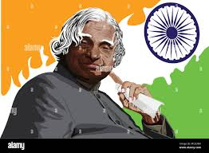

“Excellence is a continuous process and not an accident.”- A.P.J. Abdul Kalam These words come from the man who knew excellence at close quarters, Late A.P.J Abdul Kalam. The 11th President of India was a scientist turned politician who left a mark not just in Indian but also in the world history. He has been honored with the Bharat Ratna, the highest civilian honor an Indian can receive. He was elected the President unanimously by Bharatiya Janata Party and opposition Indian National Congress in the year 2002. He served his term from 2002 to 2007 and then returned to his sacred life of education and science.
Abdul Kalam had to struggle a lot to reach the success he has achieved in his career. He has been a live manifestation of the strength he describes in this quote. Avul Pakir Jainulabdeen Abdul Kalam or A.P.J Abdul Kalam was born on 15 October, 1931 to a humble Tamil Muslim family. He had to sell newspapers his his childhood in order to manage the finances of the family. He was an average student in school but his keen interest in studies and his hard work are what helped him achieve success in his career. Kalam graduated in Physics from Tiruchirapalli’s St Joseph’s College, which was affiliated with the University of Madras, in 1954. In the year 1955, Kalam pursued Aerospace Engineering from Madras Institute of Technology. Kalam wanted to become a fighter pilot for IAF but missed the opportunity as there were only eight positions and Kalam qualified ninth.
“Climbing to the top demands strength, whether it is to the top of Mount Everest or to the top of your career.”- A.P.J. Abdul Kalam | Image Resource : cooldigitalphotography.com
Kalam’s journey to become the ‘missile man of India’ had its trials and tribulations and yet he attained his goal because of his singleminded devotion. After he completed his engineering, he joined DRDO’s Aeronautical Development Establishment as a scientist. He also designed a helicopter for the Indian Army in the beginning of his career. Kalam was still not sure of his career choice. In 1969, Kalam was transferred to the Indian Space Research Organisation (ISRO). In ISRO, he headed the project of India’s first Satellite Launch Vehicle (SLV-III). The growth of Kalam began here from a mere scientist to become the missile man of India itself. He headed several successful launches and started gaining recognition in relevant circles.Kalam was the chief executive of the Integrated Guided Missile Development Programme. Under this mission, Kalam helped to develop Agni and Prithvi missiles. Kalam was also the Chief Scientific Adviser to the Secretary of DRDO and to the Prime Minister. The Pokhran-II tests were conducted in the same period. These subsequent successes made Kalam one of the most popular scientists in media.
After graduating from the Madras Institute of Technology in 1960, Kalam joined the Aeronautical Development Establishment of the Defence Research and Development Organisation (by Press Information Bureau, Government of India) as a scientist after becoming a member of the Defence Research & Development Service (DRDS). He started his career by designing a small hovercraft, but remained unconvinced by his choice of a job at DRDO.Kalam was also part of the INCOSPAR committee working under Vikram Sarabhai, the renowned space scientist.In 1969, Kalam was transferred to the Indian Space Research Organisation (ISRO) where he was the project director of India's first Satellite Launch Vehicle (SLV-III) which successfully deployed the Rohini satellite in near-earth orbit in July 1980; Kalam had first started work on an expandable rocket project independently at DRDO in 1965.In 1969, Kalam received the government's approval and expanded the programme to include more engineers. In 1963 to 1964, he visited NASA's Langley Research Center in Hampton, Virginia; Goddard Space Flight Center in Greenbelt, Maryland; and Wallops Flight Facility.Between the 1970s and 1990s, Kalam made an effort to develop the Polar Satellite Launch Vehicle (PSLV) and SLV-III projects, both of which proved to be successful. Kalam was invited by Raja Ramanna to witness the country's first nuclear test Smiling Buddha as the representative of TBRL, even though he had not participated in its development. In the 1970s, Kalam also directed two projects, Project Devil and Project Valiant, which sought to develop ballistic missiles from the technology of the successful SLV programme.Despite the disapproval of the Union Cabinet, Prime Minister Indira Gandhi allotted secret funds for these aerospace projects through her discretionary powers under Kalam's directorship.Kalam played an integral role convincing the Union Cabinet to conceal the true nature of these classified aerospace projects.His research and educational leadership brought him great laurels and prestige in the 1980s, which prompted the government to initiate an advanced missile programme under his directorship.Kalam and Dr V S Arunachalam, metallurgist and scientific adviser to the Defence Minister, worked on the suggestion by the then Defence Minister.
Dr Kalam has been honored with the Padma Bhushan in 1981, Padma Vibhushan in 1990 and the Bharat Ratna in 1997. He has also been honored with National Space Society’s Von Braun Award in the year 2013. He has received honorary doctorates from 40 universities around the world. After his death, the Tamil Nadu Government has declared 15 October as Youth Renaissance Day. The United Nations Organisation has declared 15 October, Dr Kalam’s birthday, as World Student’s Day.